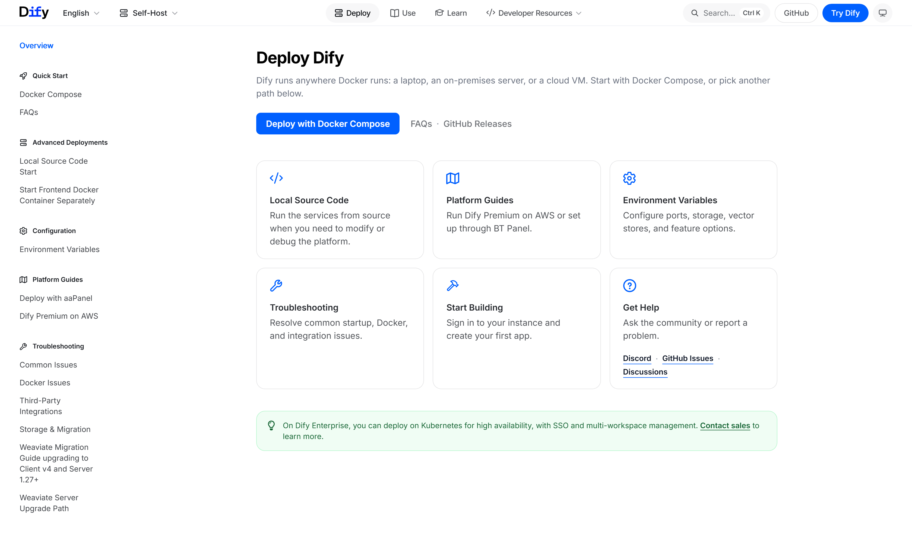
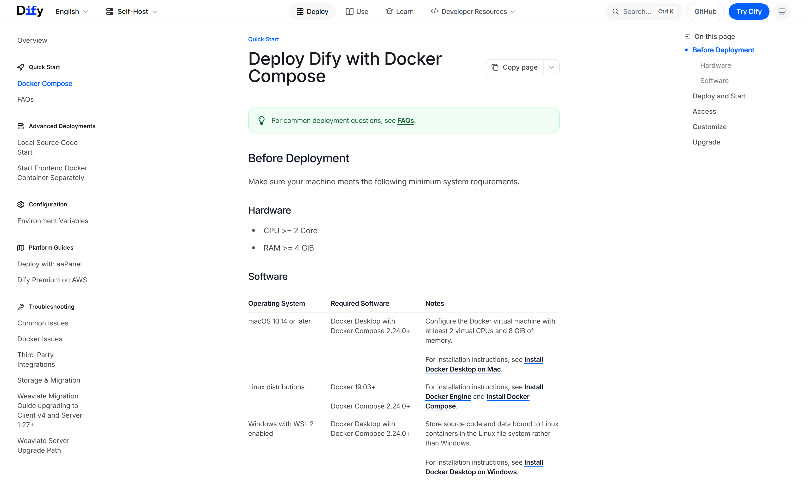
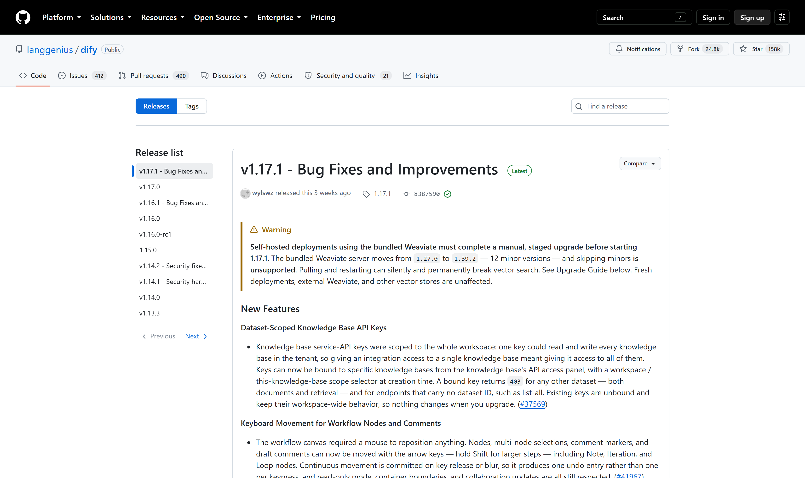

OSS PROJECT INTRO · DIFY 系列第 2 期：5 分钟跑起来
上一期认识了 Dify——把编排、RAG、Agent 收进一张画布的开源 LLM 应用开发平台。这期动手：docker compose 一条命令拉起全套栈，初始化管理员账号，建出第一个聊天应用，挂一个知识库试出带引用的 RAG 回答，最后接出一条 REST API 让业务系统能调用。全程逐字对照官方部署文档，前置只要两核 CPU、4 GiB 内存。本期结束，你拥有的不是一个 demo，而是一条从文档到回答、从回答到接口的完整链路。
官方部署文档《Deploy with Docker Compose》把门槛压得很低（docs.dify.ai，2026-09-30 核对）：CPU 两核起、内存 4 GiB 起、Docker Compose 2.24.0 以上——一台笔记本的虚拟机就带得动。两处系统差异提前留意：macOS 用 Docker Desktop 时把虚拟机配到至少 2 vCPU、8 GiB 内存；Windows 走 WSL2 方案，官方特别提醒代码和数据要放在 Linux 文件系统里而不是 Windows 盘。动手前一条命令验版本：docker compose version。

git clone https://github.com/langgenius/dify.git
cd dify/docker
cp .env.example .env # 环境变量先复制再改
docker compose up -d # 后台拉起全套服务首次启动要拉取一批镜像，数分钟后全套就绪。所有配置集中在 dify/docker/.env 一个文件里：访问端口、密钥种子、选哪个向量库，改完重启生效。两个高频小操作：
docker compose ps # 体检：应全为 Up 或 healthy
# init_permissions 显示 Exited 属正常：任务容器跑完即退
# 80 端口被占？改 .env 里的 nginx 端口再重启
# EXPOSE_NGINX_PORT=8080
docker compose up -d来源注记——docs.dify.ai《Deploy Dify with Docker Compose》（2026-09-30 核对）：启动命令、状态检查口径（Up / healthy，init_permissions 退出属预期）与默认 80 端口均出自该页；端口变量 EXPOSE_NGINX_PORT 出自仓库 docker/.env.example 第 297 行（2026-09-30 核对）。
这条命令背后是一支各司其职的小舰队：nginx 把住入口默认 80 端口；web 是管理界面；api 是大脑，重活外包给 worker 异步队列；数据分三处——元数据进 postgres、缓存队列进 redis、知识检索进默认向量库 weaviate（compose 里换 Qdrant、Milvus、PGVector 等只需切换 profile）；再加上管模型与工具插件的 plugin_daemon 和隔离执行代码的 sandbox。第 3 期按职责细拆。
浏览器打开 http://localhost，首次访问会被引到 /install 设置页——给管理员设好邮箱和密码，之后回到首页登录进工作台。这个设置页只在第一次出现，它是整套系统的root账号，生产环境密码务必够硬、访问面务必收窄（官方文档 Access 一节口径，2026-09-30 核对）。

登录后四步走：① 创建——工作台选"创建空白应用"，类型挑聊天助手；② 选模型——右上角设置里先安装一个模型供应商插件（OpenAI、DeepSeek 或本地 Ollama 都在市场里），配好密钥选一个对话模型；③ 调提示词——编排页写人设与要求，右侧预览即改即测；④ 发布——一键发布成 WebApp 直接对话，或走 API 给业务系统用（第 07 节）。全程不写一行代码，原型五分钟出街。
先建库：左侧"知识"页创建知识库，上传文档（产品手册、制度文件都行），分段设置先按默认（分段长度与重叠），索引方式选高质量——它会调用嵌入模型做向量化；检索设置可选向量、全文或混合检索加重排。处理完成后，回到聊天应用的编排页关联这个知识库，再提问时回答会自动附引用出处。官方文档《Create a Ready-to-Use Knowledge Base》给的正是这条四步路径（2026-09-30 核对）。
建完别急着用，先做召回测试：知识库详情页里模拟用户提问，看命中的分段准不准、引用贴不贴题；不准就调——改分段粒度、开混合检索加重排，再测一轮。检索质量决定回答质量，这一步是 RAG 应用的命门，第 4 期实战还会回来细调。
应用的"API 访问"入口生成密钥（app- 开头），业务系统就能把整个应用当服务调。对照官方 API Reference（2026-09-30 核对），chat 模式的发消息接口一条命令验证：
curl -X POST 'http://localhost/v1/chat-messages' \
-H 'Authorization: Bearer app-xxxxxx' \
-H 'Content-Type: application/json' \
-d '{"inputs": {}, "query": "入职流程是什么？",
"response_mode": "blocking", "user": "hr-001"}'返回 JSON 里 answer 字段是回答，引用分段在元数据里；同一会话带 conversation_id 续接。inputs、query、user 必填，response_mode 默认 blocking、可选 streaming 流式。官方特别提醒：密钥只在后端使用，别嵌进前端代码。到这一步，"应用即服务"闭环了。
| 现象 | 原因 | 解法 |
|---|---|---|
| 容器反复重启 | 虚拟机内存给得太小 | 调到 2 核 4 GiB 以上再起（官方前置口径） |
| 80 端口被占 | 本机已有服务占用 | .env 改 EXPOSE_NGINX_PORT 后重启 |
| 镜像拉取慢/超时 | 到 Docker Hub 网络不稳 | 配镜像加速后重跑 compose 命令 |
| 老环境升级后检索异常 | 捆绑向量库跨版本跳跃 | 严格按 v1.17.1 升级指南分步迁移 |
最后一行展开说：v1.17.1 的发布说明里有一条醒目警告——捆绑的 Weaviate 从 1.27.0 跨到 1.39.2（十二个小版本），存量部署必须按官方升级指南分步操作，直接跳升可能永久损坏向量检索；全新部署不受影响。这也是开源项目的基本功：认准 Latest 标签，升级前先读 Release Note。

来源注记——github.com/langgenius/dify/releases（2026-09-30 核对）：v1.17.1 为 Latest，2026-09-10 发布；Weaviate 升级警告原文见该页 Warning 段；上方列表中 v1.16.0-rc1 为预发布标签，生产环境勿追。
每题点击选项立即反馈 · 共 3 题
1. 社区版默认通过哪个端口访问？
2. docker compose ps 里 init_permissions 显示 Exited，说明？
3. 老环境升级到 v1.17.1 前，发布说明里的关键警告是？
先理解这套默认布局的设计意图：compose 把 nginx、web、api、worker、三套存储、插件进程、沙箱编排成一个逻辑整体，容器之间是进程隔离，共享一台主机的资源池——它卖的是"五分钟可用"，不是"生产级分布"。这条单机路线的舒适区：团队规模几十人以内、知识库文档量在万级以下、QPS 个位数到几十，三个条件同时满足，单机加好备份就是最省钱的正解。拆分的信号也有三个：其一，资源互抢——嵌入索引任务把 CPU 打满拖累对话响应，worker 与 api 的资源曲线高度负相关，说明该分主机了；其二，可用性要求升级——问答服务进入生产业务链路，单机故障等于业务停摆，需要多副本加负载均衡；其三，数据规模越线——向量库与 postgres 需要独立扩容、独立备份策略。值得强调的是：Dify 的拆分成本是可控的——compose 里的服务边界就是天然的拆分单元，api 无状态化后横向扩 worker、向量库换外置集群都是官方文档覆盖的路径。架构师的活儿不是"一步到位上集群"，而是认清单机舒适区的三条边界，在信号出现时按服务边界渐进拆分——这与微服务演进的方法论一脉相承。
RAG 应用的回答质量由两段决定：检索段（能不能把对的段落捞回来）和生成段（模型怎么用捞回来的段落作答）。生成段有平台兜底，检索段的质量却完全取决于你的数据形态与分段决策——文档结构、分段粒度、重叠设置、检索方式，每个选择都影响命中。召回测试之所以是命门，因为它是唯一在"上线前"就能独立验证检索段质量的手段：模拟真实提问，看命中的分段对不对。跳过它，故障不会在测试环境爆发，而会在生产以三种形式出现：其一，静默降级——检索捞回的是沾边的错误段落，模型一本正经地编出似是而非的回答，用户无从分辨，这是最危险的形态；其二，引用露馅——回答附了引用，点开发现文不对题，信任一次性崩塌；其三，长尾黑洞——主路径的提问恰好命中，少数派问法全部落空，而这类问题恰恰是知识库存在的意义。运维视角再补一刀：这类故障监控难覆盖（服务全绿、延迟正常），只能靠用户投诉发现。所以正确的顺序是：召回测试用真实问题库打磨到命中稳定，再接应用、再上线；上线后靠日志里的引用命中持续监控。五分钟的测试，买的是检索段的确定性。
带走这五句话：
下期预告：第 3 期《核心概念与整体架构》——五种应用类型怎么选、编排引擎与节点模型、RAG 管线从分段到重排的内部、模型供应商抽象与插件生态。
Primary source：Dify 官方部署文档（Docker Compose）——本期命令、前置要求与初始化口径均出自官方文档与仓库（v1.17.1，2026-09-30 核对）；API 口径见 API Reference，版本记录见 GitHub Releases。